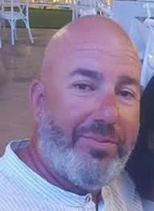

נחל עוז
אליקים נועם ז"ל
מסגר, איש משפחה ונתינה
סיפור חיים
נועם אליקים ז״ל, בנם של סילביה ויוסף, נולד בב׳ בטבת תשל״ז, 23 בדצמבר 1976. הוא היה הילד השני במשפחה, אח לצורית, נופיה, יאיר ואושרי.
נועם גדל והתחנך בנתיבות. כבר בילדותו היה ילד עם לב זהב, אדם שהעניק מעצמו לסובביו בנדיבות, ברוחב לב ובשמחה.
לאחר סיום לימודיו התגייס לצה״ל ושירת שירות צבאי מלא. לאחר שחרורו עבד בעבודות שונות, ובהמשך התגורר תקופה בערד, שם פתח סניף של רשת בתי הקפה ״קקאו״.
נועם היה איש של אנשים — מצחיק, חם, אוהב אדם, כזה שמתחבר במהירות לכל אחד. בהמשך פתח עסק עצמאי כמסגר והעסיק עובדים, בהם אחיו הצעיר אושרי. אושרי סיפר: ״עבדנו יחד 13 שנה, כתף לכתף. תמיד היה זמין בשבילי לכל שאלה, מנטור לחיים, דמות מקצועית שאין שני לו.״
כמעסיק וכאיש מקצוע היה נועם דוגמה ומופת. הוא היה מקצועי, בעל ידי זהב, וכל עבודה שביצע הייתה איכותית ומדויקת. גם תוך כדי עבודה ידע למצוא זמן לבדיחות, לשיחות עם לקוחות, לדברי תורה ולרגעים של חיבור אנושי. בין לקוחותיו הייתה גם חברת ״אינטל״ בקריית גת.
נועם היה איש של עשייה מתמדת, אך תמיד הקפיד להיות קרוב למשפחתו המורחבת. הוא ביקר בכל הזדמנות את הוריו בנתיבות, את אחיו ואחיותיו ואת אחייניו, והיה נוכח בחייהם באהבה ובמסירות.
במרוצת השנים נישא לבחירת ליבו מעיין. לנועם היה בן מנישואיו הקודמים, עומרי, ולבני הזוג נולדו שתי בנות — דפנה ואלה. לאחר שנועם ומעיין נפרדו, הבנות נשארו לגור עם אביהן. נועם היה אב מסור, סבלני, רגיש ואכפתי. הוא נהג להעיר את בנותיו מדי בוקר, לארגן אותן לבית הספר ולדאוג לכל צורכיהן באהבה גדולה.
בשנת 2015 הכיר נועם את דיקלה ערבה, ובין השניים נרקמה מערכת יחסים יפה של אהבה, כבוד ושותפות. דיקלה ניהלה את מערכת החינוך בנחל עוז והייתה יועצת חינוכית לגיל הרך. נועם עבר לגור איתה בקיבוץ נחל עוז. תומר, בנה הצעיר של דיקלה, גדל עם דפנה ואלה כאח אהוב לכל דבר.
בשנת 2019 נפטר אביו האהוב של נועם, יוסף, ממחלה קשה. לאחר מותו לקח נועם על עצמו את תפקיד ראש המשפחה. הוא ליכד את כולם, דאג לאימו סילביה וסייע לכל מי שהיה צריך. סילביה סיפרה: ״לא הספקתי לומר לו מה אני צריכה, עוד לא סיימתי את המשפט — ונועם כבר הגיע. תמיד קראנו לו ‘נעשה ונשמע’, קודם הוא היה עושה ואחר כך היה שואל.״
גם אחיו יאיר, שהיה קשור אליו מאוד, סיפר: ״כל בעיה הכי קטנה שיש, נפתרה. במילה אחת נועם פתר הכול.״
אחיותיו תיארו אותו כאיש חסד אמיתי, שעזר למשפחות רבות ועשה הכול בצנעה ובסתר. למרות תקופות לא פשוטות שעבר, הייתה בו שמחת חיים, עוצמה ויכולת לקום מכל משבר. הוא הביא איתו אנרגיות חיוביות לכל מקום שאליו הגיע.
בזמנו הפנוי אהב נועם לשיר ולטפל בגינה. הוא טיפח את הזוגיות עם דיקלה והיה מאושר מאוד. בשנת 2021, לאחר שמונה שנות זוגיות, סיים לשפץ את ביתם המשותף בקיבוץ נחל עוז. בחצר הבית הייתה גינה גדולה, יפה ומעוצבת, שסימלה את אהבתם ואת התקווה לעתיד ארוך של משפחה, בית ושמחה.
שבעה באוקטובר והימים שאחריו בבוקר שבת, שמחת תורה תשפ״ד, 7 באוקטובר 2023, חדרו מחבלים לקיבוץ נחל עוז במסגרת מתקפת הטרור הרצחנית על יישובי עוטף עזה.
באותו בוקר שהו בבית המשפחה נועם, דיקלה, בנותיו דפנה ואלה, ותומר, בנה של דיקלה. כאשר החלו היריות בחוץ, הכניס נועם את הילדים מתחת למיטה וביקש מהם לשמור על שקט.
במהלך ניסיון המחבלים לחדור אל הבית, ירו המחבלים בדלת ופצעו את נועם ברגלו. לאחר מכן הוציאו את בני המשפחה ממקום המחבוא, הושיבו אותם בסלון ותיעדו את המתרחש. בהמשך אילצו את תומר לצאת מהבית באיומי נשק, והוא נרצח זמן קצר לאחר מכן.
מחבלי חמאס הכניסו את נועם, דיקלה, דפנה ואלה לרכבו של נועם והחלו בנסיעה. במהלך האירוע נרצחו נועם ודיקלה. דפנה ואלה, שנפצעו, נחטפו לרצועת עזה והוחזקו בשבי חמאס במשך 51 ימים, עד ששוחררו במסגרת עסקה.
נועם הוגדר נעדר במשך עשרה ימים, עד שמשפחתו קיבלה את הבשורה הקשה שנרצח.
נועם אליקים נרצח בקיבוץ נחל עוז בכ״ב בתשרי תשפ״ד, 7 באוקטובר 2023. בן 46 היה במותו. הוא הובא תחילה למנוחות בבית העלמין בכפר מימון, שם נטמן לצד אהובתו דיקלה ובנה תומר. כשהתאפשר, הועברו למנוחת עולמים בבית העלמין המקומי בנחל עוז.
זיכרון ומילים מהלב אחיותיו של נועם כתבו: ״יהי רצון שנלמד מנועם חיי נתינה וחסד, ומדיקלה מהי שמחת חיים אמיתית.״
חברה קרובה ספדה לנועם ולדיקלה: ״האדם לא נמדד במספר שנות חייו, אלא במעשיו. היו שלום, אנשי עשייה, והאירו משמיים.״
נופיה, אחותו של נועם, כתבה: ״אחי היקר והגיבור, הגעגועים אליך רק מתגברים עם הזמן, הכיסופים לראותך אינם מרפים. אחי האהוב, כמוך יש רק אחד. בלכתך נפער בתוכנו חלל שאיש לא יוכל למלא. תמיד נזכור, לא נשכח ונמשיך לספר את אשר היית.״
אושרי, אחיו, כתב: ״דם שלי, יום ועוד יום עובר ואני עדיין מתכחש למציאות הקיימת. במשך השבעה באו לנחם אותנו מלא אנשים שהכירו אותך. כולם סיפרו בדמעות של כאב אבל גם עם חיוך כמה הם נהנו להיות בחברתך, כמה היית מאיר פנים. זה בכלל לא מפתיע אותי, ההפך, זה רק חיזק לי את הידיעה מי היית. נועם, כשמך כן אתה. היית נעים לכל הסביבה שלך.״
בן דודו ניצן סיפר כי נועם היה אדם שכולו לב עד רגעיו האחרונים. לדבריו, נועם היה גאה בכך שהוא מתגורר בעוטף ומיישב את הארץ, איש של עשייה, נתינה וחסד ללא גבולות, שעשה הכול בצניעות ובשקט.
נועם נזכר כאיש משפחה, אב מסור, בן זוג אוהב, אח, בן וחבר מלא חסד. אדם של עשייה, נתינה, שירה, שמחה, אמונה ואור; מי שתמיד היה שם לפני שביקשו ממנו, ותמיד ידע לחבר, לעזור, להצחיק ולחזק.
זכרו נשאר בלב ילדיו, אימו, אחיו ואחיותיו, קהילת נחל עוז וכל מי שזכה להכיר את טוב ליבו.